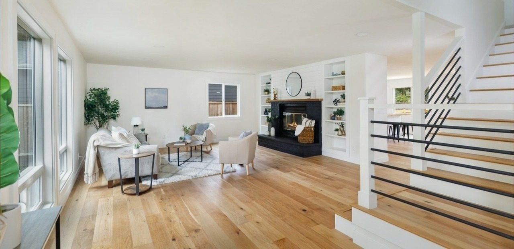
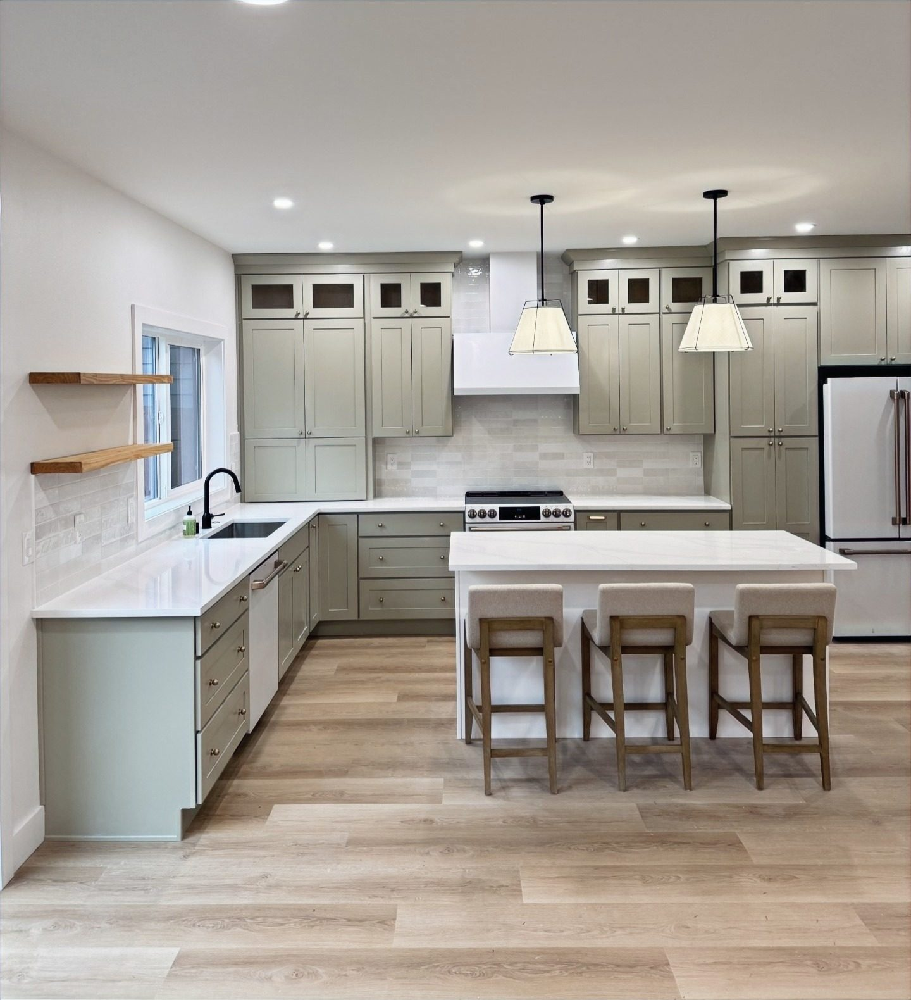

Precision
We plan carefully and execute without cutting corners, so every home withstands the test of time.

We're Matt and Alexis Bender — and we build homes we'd be proud to live in.
We live in one of the most unique and beautiful areas of the U.S., and we're fortunate to spend our time investing in old homes that need to be restored — and building new homes with character.
Matt earned a Bachelor's in Construction Management from Central Washington University and spent two years gaining experience at a nationwide general contractor. In the spring of 2021, he stepped away from the corporate world to start Grit City Builders. He began doing most of the renovation work himself, and now manages a team of specialized subcontractors — though he still gets his hands dirty (he can't help it).
Alexis holds degrees in Psychology and Business from the University of Puget Sound. She brings each vision to life with unique, impactful design choices.
We plan carefully and execute without cutting corners, so every home withstands the test of time.
The bigger the challenge, the more excited we get. Large-scale restorations and new builds are what we love most.
We maintain a transparent relationship with every client and ensure projects are completed on time.

We have a growing base of loyal clients — a testament to the quality of our work. We earn that reputation by planning and executing, keeping communication transparent, and delivering on time.
Have a major renovation you need help with? Looking for a home builder to bring your vision to life? Reach out — we'd love to chat.
Get in TouchTell us about your project — new build, renovation, restoration, or ADU. We can't wait to hear about it.
Start Your Project